茉莉花开 @ Jul 14, 2010
今天出太阳了，特别高兴。赶紧将茉莉花搬到朝南的窗台上。江苏民歌《茉莉花》，歌词写的是“好一朵美丽的茉莉花。。。”，我觉得它的外观并不美丽，它的美在于它的芬芳，实在是适合夏季的花朵。
原先盛开的荷花，昨夜便走到了尽头，花瓣飘落，露出鲜嫩的莲蓬，小花苞却比之前更茁壮。荷花开的快，谢得也快。早晨给植物浇水，看到两只彩色的鸟儿边飞边在捕食飞行的昆虫。大自然真是神奇的画师，从未停止过作画。
我，爱这样的早晨。

今天出太阳了，特别高兴。赶紧将茉莉花搬到朝南的窗台上。江苏民歌《茉莉花》，歌词写的是“好一朵美丽的茉莉花。。。”，我觉得它的外观并不美丽，它的美在于它的芬芳，实在是适合夏季的花朵。
原先盛开的荷花，昨夜便走到了尽头，花瓣飘落，露出鲜嫩的莲蓬，小花苞却比之前更茁壮。荷花开的快，谢得也快。早晨给植物浇水，看到两只彩色的鸟儿边飞边在捕食飞行的昆虫。大自然真是神奇的画师，从未停止过作画。
我，爱这样的早晨。
上海工设成员、著名设计师刘传凯先生（Carl liu）设计的“上海微风”扇子，囊括了很多上海知名建筑，太有想象力了。如果把南京的建筑也整成一把扇子，上面会是些啥？

西学东进： 近代， 中国历史发展较西方慢了一拍， 故中国所宣传和信仰的往往是西方前一个世代所流行的思想。
@沈萍:所以，人家讲绿色，我们讲GDP，人家讲家庭，我们讲二奶，人家晚上在家里度过，我们（很多人）的晚上在夜店里度过。。。人家讲诚信，我们讲“成功”。。。我们还在草莽时代。。。
在胖子砂锅巧遇问问，吃完砂锅，她走到她的汽车旁，打开后备箱给我看她搬来的茉莉与荷花，震住我唠，5个花苞，深受打击，前一天我搬回的那盆相比之下无比瘦弱，于是当天下午又去搬了一盆回来。。。依然是盆比花贵，但这次是移栽到盆里的。打算将瘦弱的那株淘汰给老爸。话说她打开后备箱的一刹那，那种交流的快感真是不言而欲呢。
下大雨的天气，最先入住的“瘦子”绽放出动人姿态，美得那么地不真实，象是画出来似的。哎，也许自己留着欣赏也挺好。无论养什么都需要了解和积累，即使它们不能顺利活过今年，对自己也是促进，明年再来。工作到中午，居然想念家中的荷花唠~


周末雄心壮志跟随“系出民门”的脚步，从升州路一路追到南湖。这些平常美食，过去也曾体会，倒未有情愫纠缠。如果人与美食也有缘分在其中的话，缘分到了，便生出爱来。
***“系出民门”之胖子砂锅***
由于信息错误，在文体路上开了个来回，最终在文体西路19号找到它。的确是位肚子浑圆的胖子老板，敞开式厨房面向小街，老板站在里面进行烹饪。店里四个桌子，十六张凳子，空调充足，还算干净。他家的砂锅区别在于，吃不出味精、鸡精的味道，咸淡适中。牛肉、牛筋松紧度炖得恰到好处，不因为小店，不因为是小食，而疏于用心。

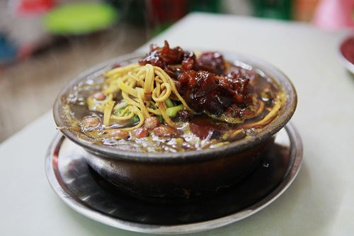
***“系出民门”之章云烤鸭***
位于升州路与评事街交叉口，顾客排队的那家正是“章云烤鸭”。可以理解SHUWUA买了后边走边吃缘于何故，刚出炉的烤鸭的确要美味几分。南京烤鸭店数以千计，也可能数以万计？有谁统计过？在这座盛产烤鸭与盐水鸭的城市，能找到符合自己口味的鸭子店，还真需要花些功夫，靠口碑相传是生意之道，也为吃货们提供了觅食捷径。听问问说章云的盐水鸭也不错。
问问童话“胖子叔的鸭子店”的现实版便源于章云烤鸭对面的鸭子店。果然有位胖子叔，但没有问问画里的胖子叔慈祥阔爱，黑忽忽的面庞在没有灯光的橱窗后面更加灰暗，估计看到排队在别人家鸭子店前的顾客，心情更加灰暗吧？不免让人想到了“相从心生”。我貌似不经意地扭头瞥了一眼，胖子叔敏感地拿起大菜刀，在他的商品上轻轻切了一下，再平常不过的心理反应，如果你看过问问的这篇童话，这一幕会让人暗自发笑。

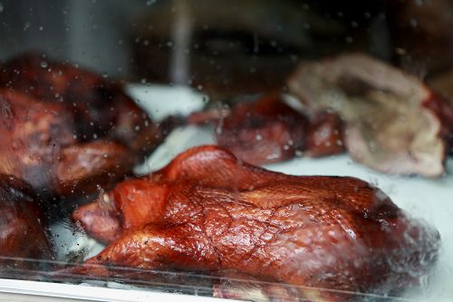
童话《胖子叔的鸭子店》里超级阔爱的胖子叔。

“章云烤鸭”所在的评事街，曾是南京历史上最繁华的地区之一，如今苟延残喘似乎走到了尽头，请看这篇《评事街的最后碎影》。南京这样的老巷子，越来越少了。
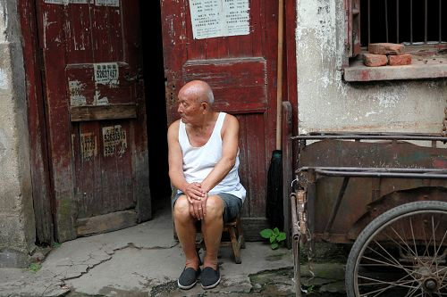


中午做了几个菜，喝上一瓶雪花啤酒，边喝边说“快活哦，好吃哦”，好象喝傻了；
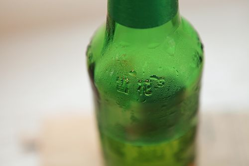
自从拜访过箱子家之后，对荷花念念不忘。终于下午搬回荷花一盆，无孔花盆少，在很少的范围内能挑到满意的不容易。最终挑了个有孔花盆，套在荷花盆外面，等以后有合适的再换。初次养荷花，不贪心不贪心，先养一盆试试。看着它，心里好安静啊。
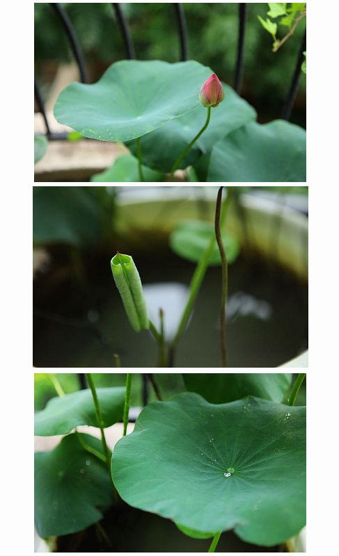
这些幼年植物逐渐成长，代给我安慰。
图一：曾经向老爸讨要一盆薄荷，有次回家他给了我一盆，里面竖着2、3根枯枝。。。我就这么端回来。不过两三周时间，它已经长出俊摸样；
图二：箱子给的金边常青藤，拿来时4、5片叶子，在我家长出3片新叶子唠；
图三：从疯长的滴水观音里移植出两小盆，这是其中长得最旺盛的一盆，想着明年夏天是不是就可以分给朋友们几盆呢？


晚饭吃到嘴已经9点多。中午炖的白米粥，就着小菜、咸鸭蛋和烧饼，夏季餐只要清淡，怎么简单都能接受。无论白天多忙，晚上依然坚持看部电影，吃半个西瓜。
这两天不知是被内分泌还是工作闹腾的，很容易激动。事后又后悔，冷静下来想想也有更好的方法，干吗要发火呢？今天主动找人家沟通，对方没事似的说：“只要人nice，发点火算啥。。。”瞬间让我得到宽慰，不发火的人也有，如果不是修养特别好，那城府肯定不是一般的深，当然也不是什么好人。沟通好了理解了，感觉跟在西方电影里似的，呵呵，如果中国人相处都这么简单，多好。
“你最近怎么不去上海看世博。。。”
“我连南京城都不愿意多跑，更别说出城了。”
北京哥们儿结婚，有国际小乐队来助兴，据说还有些名气。婚礼在这个周六的上午10点开始，请了一堆朋友来参加，当然有李延亮，现在的他是不是长变形唠？饭局从明晚开始，先是朋友聚餐，然后是婚礼餐。想想就感到高兴，且蠢蠢欲动，那么多年没见的亲爱的们，现在都成啥摸样了？哥们儿用他那大舌头发着北京特有的卷舌音，说：“你老憋在南京干吗？你就不能来北京一趟吗？你要星期六早上到，你就甭来了，来了也没人接你。”即使在南京，大多数时候也是“憋”在家里，这世界上没有一个地方比憋在家里让我感到更舒心。据说女人到35岁才会玩够。。。过了30岁我才搞定自己，那颗总想外出撒野的心，恍然间就变了。现在的“我”让我感到轻松。
你在火急火燎的救火，有人偏偏不在状态轻描淡写地撩下一句话，没有关心，没有救火的愿望，完全置身事外。这句话将你变成纵火犯。作为救火员，是不是会突然间爆发呢？答案是肯定的。不领情倒也没什么，问题是救的是谁的火？
我常对朋友说，别人没要求你帮忙，你最好什么都别做。最后你做的就变成是“你应该的”。年龄，是不是还可以用来解释面对问题所产生时的“不成熟”呢？我，有包容心，一般在我发完脾气之后。事情做了，脾气也发了，人也得罪了，结论是情商低的人可以出口到火星去。

“方脸，短脖子，圆肩膀，没腰，小腿粗，盘发象买菜的老太婆，长得菜，对于衣服品位低俗。。。”clara_001如此使劲儿的粉饰，真让人受宠若惊啊，太重视我了。这些形容我照单收下，实在是象卡通人物一样阔爱：D感谢鼓励。
替我问候你老爹老娘，生出这么个情商与智商如此绝配的人物，另外，甭再继续使用202.127.145.232，万一盛情难却，怎么办？：）

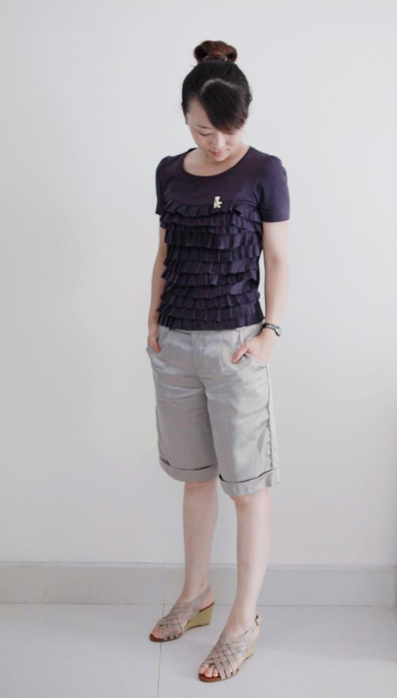
要知道，桶状也是一种身材。
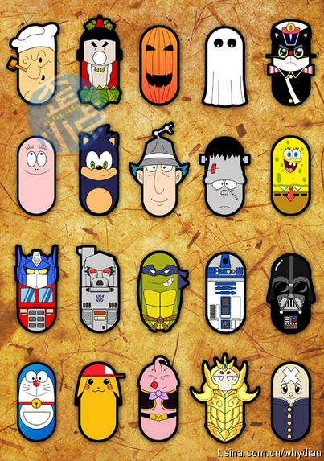
“七一”活动地点：沙家浜。
牺牲周末一天时间，8：30出发，路上2个多小时车程。到达后即在“五福酒店”吃午饭，饭后被雷电交加的大雨困住，打牌、聊天及发呆来消磨时间，雨渐渐小时，出去转一圈。门票100元每位，折后55元。地方政府以旅游带动经济的想法，在这座人工园子里处处可见，肯定花了不少钱建造。
虽然下了雨，天气依然闷热，我既带了草帽又带了雨伞，还穿了长袖衬衣。浑身粘糊糊的不知是汗还是雨水，感觉糟透了，值得庆幸的是带的卡片机。看了下园子里处处是公款来活动的各单位党员同志，谁自己花钱跑这儿旅游，脑子估计缺氧了。往年活动去的茅山，那次我没去，据说也是极其无趣。形式主义，什么时候才能消失？
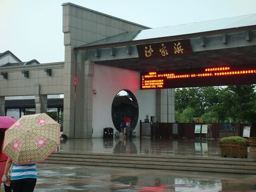
江南也有好景色；
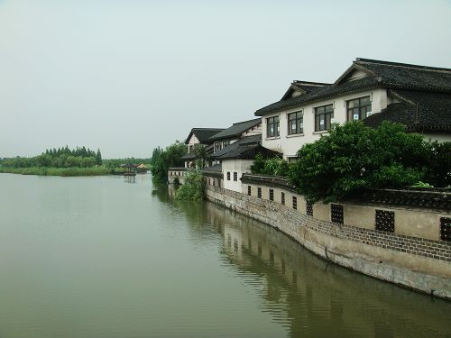
新四军官方英文缩写；
不知哪个单位的党员活动，搞得象摸象样，拉起旗帜来拍集体照。一阵风吹过，我的鸡皮疙瘩又出来了。

耳熟能详的革命电影在这里也能寻找到踪迹；

样板戏居然有日文和韩文版本；

第三代“春来茶馆”，面对面怎么也找不到茶馆的感觉，就是一个商业铺子；
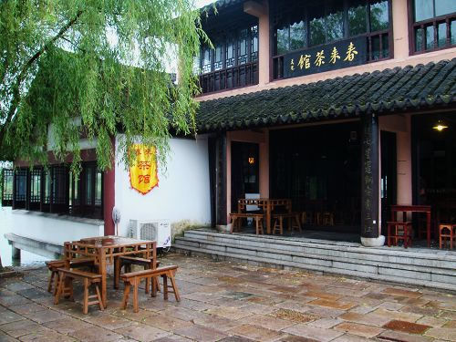
没来得及去看南京的荷花，在沙家浜倒遇到，美；


摇浆于芦苇荡间，船程不长，边上的水芦叶子可以包粽子，江芦叶子就不行了。
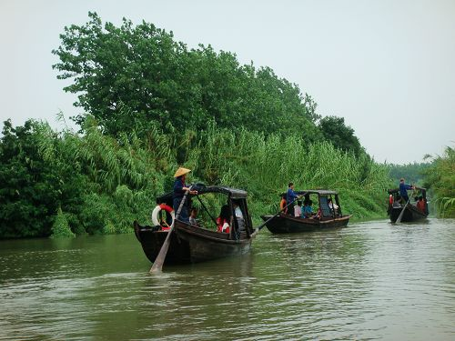
卡片机拍摄的合影照，每个人看上去都很美。

横泾小街，人工制造，人为做旧，实在无趣；

“武大郎炊饼”的吆喝：潘金莲制造，西门庆监制。买了四包准备送给JM们吃，回家自己先尝了尝，直接扔垃圾桶了。